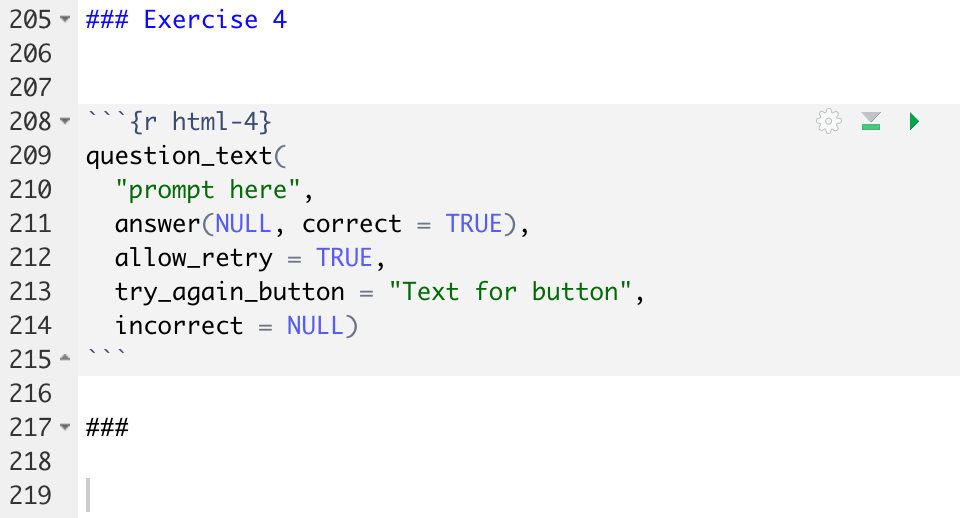

There are no questions here. There are only instructions!
Tutorials are not challenging. They are confidence-building.
Introduction
Imagine shallowest possible learning curve. Almost every student should be able to answer almost every Exercise, albeit perhaps with the help of the Hint. There are no hard questions. In fact, there really aren’t questions at all. Instead, there are instructions. Do this. Then do that. Next do this other thing.
Assume that you are giving the student a private lesson. You ask them a question. They give you an answer. What would you say next to them? What do you want to teach them, given that context?
There are 1,000,000 bits of R knowledge which we might provide to students: tips, tricks, cool packages, fun websites, et cetera. We don’t have time to mention all of them! The art of teaching is to, first, decide which 10,000 of the bits are most important to mention and, second, figure out the best time to mention them. Tutorials are a key location for doing that mentioning. Which bits do we mention and where do we mention them?
We are building a “pit of success.” Generally, students don’t do the assigned reading, at least in a large class. But, they will complete required work. They will do the tutorials. Our promise: If you complete the tutorials, you will become a data scientist. There is simply no way not to.
There will often be several tutorials for a given the chapter. The first few will be matched very closely to the structure of the chapter. Someday, we will put those exercises directly into the Primer itself, so keeping the two in sync makes sense. Extra tutorials have more freedom. They are designed to give more practice, reinforcing the material in the chapter, but with a bit of freedom for adding complications.
A tutorial should take about 1 to 2 hours. Depending on the topic difficulty, that might be around 100 to 200 or so questions. Some tutorials might be only 30 minutes, especially if the topic is not that important.
Set Up
To make additions to primer.tutorials, follow the set up guide to fork/download a copy of PPBDS/primer.tutorials. Press “Install and Restart” from the “Build” tab to ensure that you have the latest copy installed. (You should not do remotes::install_github("PPBDS/primer.tutorials") since that gets the version from Github. You want the version from your computer so that you get any changes you make.)
Tutorials themselves live in inst/tutorials. Each directory name is a combination of a prefix number (which indicate the week/chapter which a tutorial is associated with and the order in which to do it) and a name, which corresponds to the id' of the tutorial. Within each directory is a tutorial.Rmd file and, sometimes, other material like an images directory. The prefix number determines the order in which tutorials appear in the Tutorial pane. For example, the number 052 indicates the tutorial is from week 5 and is the second tutorial to be completed that week, after 051.
To create a new tutorial, use File -> New File -> R Markdown. Choose the “From Template” option and then select “Primer Tutorial.” The “Technical Details” vignette provides an overview of the default material in the template. Change the title, id, and description parts of the YAML header. The title may include spaces. The id should be exactly the same as the title, but all in lower case and with spaces and other special characters replaced with dashes. One sentence is enough for the description.
The id value is important. It should be the same as the directory in which the tutorial is located, but with the leading numbers removed. It is used for the name of the answer file which students save at the end of the tutorial.
The beginning of every tutorial are the Code copying and the Information code chunks. The tutorial is then divided into different Sections that you see as side panels. Within these sections, there are a series of Exercises which can include writing code or writing text. At the end of the tutorial, there is a Download answers section which provides students with instructions on how to download a copy of their answers in either pdf or rds format.
The 3 mandatory sections (copy-code-chunk, info-section, download-answers) are imported into each tutorial. The actual Rmd of these sections are saved in the inst/child_documents folder. Note that the setup code chunk must come before all of them.
Sections
Tutorials are divided into Sections that are seen on the side panel. To create these sections, we include a double hash (##) before the text for it to show up as a side panel. This is also called the Section Title. Use sentence case. Directly below the Section Title, put three hashes. This ensures that students will see the introductory text before they see the first Exercise.
Each Section begins with a sentence or two about what this group of Exercises is trying to accomplish. Then add a triple hash ### before adding the first Exercise. Example from the Data-API tutorial:
## Interacting with sites with `GET()`
###
In order to get data from an API, we use the **httr** package. The package is designed to
imitate standard HTTP in R. Read more about HTTP [here](https://www.jmarshall.com/easy/http/).
### Exercise 1The link will be formatted correctly once the tutorial is knitted. It is also OK for the Section text to have two parts, to show a plot or some other target object and then add another triple hash.
Exercises
Each Section is composed of a series of numbered Exercises.
Flow
Each Exercise should have a flow which requires that students hit the “Continue” button at least twice.
Begin with an Introduction which is a sentence or two of knowledge and/or the question itself. If the length of the introductory text is longer than one or two lines, then do not place the question code chunk in the same part. Instead, the Introduction is followed by the triple hashes, thereby creating the Continue button. If the length of the text is short enough that students are willing to read it (at most 2 lines), you can include the answer code chunk in the same part.
Then comes the answer code chunk(s). See below for more discussion. This grouping is also followed by the triple hash. We want students to pause after they have submitted their answers so that they are more likely to consider the results of their submission.
The last part of the Exercise is the Conclusion, another knowledge drop. Again, this can’t be more than a sentence or two. But it should be more substantive than a simple “Good job.” Recall the 1,000 items which we want to mention; you should decide which one belongs here because it connects to the question/answer which students have just completed.
Question types
To create the exercise headers, you use three hashes. Make sure you number your exercises – ### Exercise 1, ### Exercise 2 and so on. This makes it easy for students to refer to a specific location when they have a question.
There are two main types of questions. First, we have normal coding questions. Students write code and press the Run Code button. Second, we have text questions which require students to either write prose or to copy/paste the results of running specified commands. Prose is needed for questions like “Explain the meaning of potential outcomes.” Copy/paste situations arise when students are instructed to do something like connect to Github or edit an Rmd. We confirm that the students have completed these questions by having them issue a command like list.files() and then copy/pasting the result.
Code questions
Here is a standard code question:
### Exercise 7
Teach them something.
###
Ask a question.
```{r wrangling-b-ex-7, exercise = TRUE}
```
<button onclick = "transfer_code(this)">Copy previous code</button>
```{r wrangling-b-ex-7-hint-1, eval = FALSE}
```
###
Comments on the results they should have seen. Drop some more knowledge.First, the introductory section sets the stage, ideally by mentioning some new bit of knowledge.
Second, the exercise section requires that students write some code. Good questions generate results when the student presses Run Code.
Third, any Exercise which requires the copying of code from the prior Exercise should place the Copy previous code button below the Exercise code chunk.
Fourth, tutorials should be so easy that 95% of the students can answer 95% of the questions easily, given that they have the Primer open as they work. One way to ensure that is to add a Hint to almost every coding question.
Fifth, you must include at least one empty line in the code chunk, otherwise you will get a hard-to-diagnose error.
Hints must always have the same code chunk name as the exercise chunk for which they are the hint, with a “-hint” added at the end. So, if an exercise code chunk is named “ex-1”, then the hint associated with that exercise is named “ex-1-hint”. A second hint for that same question would be named “ex-1-hint-2”, and so on. Note, however, that if you have a second (or third) hint, you must change the code chunk name for the first hint to end with hint-1. If you only have one hint, no number is necessary.
When you create a hint, always use eval = FALSE within the parentheses in the code chunk. This is because hints will often include “…” and other symbols which do not run as correct R code. So, we need to tell R not to run it or an error will occur during R CMD check. Example:
```{r ex-1-hint-good, eval = FALSE}
This is an example hint. Normally sentences like these
would cause an error in R because it is not proper code.
However, since we include eval = FALSE in the r-chunk,
R ignores all potential errors!
```You need to wrap the text in a long hint by hand, inserting the carriage returns yourself. R will not wrap the text automatically.
Often, hints look like this
The … indicate places where the student needs to insert some code, a value or a function name. The code in hints should be formatted correctly.
In the current version of learnr, students can not see the first hint after clicking through to the next hint. So, make sure the last hint is the one you most want them to have access to, i.e., the one which provides the key information. If students can see the last hint, they should have no reason to consult any earlier hints.
Hints are only allowed for coding questions, not for text or process questions.
Fifth, we separate the code chunks from the conclusion by using ### again.
Perhaps the best approach is to write “You should see that the value of height in row 1 is 23.” This allows the students know that they are on the right track. Never hard-code a number. Use R to inline calculate it, even though this can be a bother.
Any Exercise which requires the copying of code from the prior Exercise should place the Copy Code button below the Exercise code chunk by using:
This will only work if all the special Javascript code is at the top of the Rmd.
Text questions
There are two types of text questions: 1) those that provide the students with the correct answer, after they have submitted their own answer, and, 2) those that do not provide an answer. Examples:
### Exercise 6
Explain potential outcomes in about two sentences.
```{r definitions-ex-6}
question_text(NULL,
message = "This is where we place the correct answer. It will appear only after
students have submitted their own answers. Note that we do not need to wrap the
text by hand.",
answer(NULL,
correct = TRUE),
allow_retry = FALSE,
incorrect = NULL,
rows = 6)
```For the message argument, you should provide an excellent answer. We want to allow students to check for themselves that they got, more or less, the correct answer. Note how we set allow_retry to FALSE. This means that, after they see our answer, students can’t modify their answer. The rows argument decides how many rows the empty text input will have.
Always specify (approximately) how much you want students to write. Reasonable units are: one sentence, two sentences and a paragraph. Pick one of these three unless you have a good reason not to.
However, for many written questions, we don’t provide an answer, so we don’t mind if students resubmit. In that case, we use
```{r definitions-ex-6}
question_text(NULL,
answer(NULL, correct = TRUE),
allow_retry = TRUE,
try_again_button = "Edit Answer",
incorrect = NULL,
rows = 3)
```This format is most commonly used for “process” questions in which we have told students to do something and then confirm that they have done it by copying/pasting the result from a command like list.files().
The code chunk name should begin with the name of the section followed by -ex- and by the appropriate Exercise number. (Note that we are working on a way to automatically create/update code chunk names for the entire tutorial.) You must set exercise = TRUE.
Code chunk names
Code chunk names should not include dots (periods) or spaces, even though this is theoretically allowed. Avoiding periods/spaces makes it easier for us to automate the creation of code chunk names for an entire tutorial automatically.
Tips
Each coding exercise should always spit out something. Interactivity is good! Students should always look at what their code is spitting out. There are some situations in which students need to make assignments and which, because of this, will result in no output when the Run Code button is pressed. But:
Do this as little as possible. Why not just make a pipe?
When you do this, you will need to create the permanent object yourself because student work in an Exercise chunk has no lasting effects. Doing so is annoying and error prone.
You can have the student not only do the assignment but also, as part of this same exercise, print out the object. This works well.
Prevent quotes from turning into curly quotes by writing "nnet" (with backticks around it) instead of “nnet”. You never want curly quotes in something which might be copy/pasted to the prompt.
Follow our Code Style Guide, especially spaces around operators like " = ". Use only one command per line in pipes and graphics, with proper indentation. Indent plotting commands after ggplot().
Do not create an object in one question and then assume that it will be available in subsequent questions. It won’t be! Each question is independent of every other question. They live in separate R instances. The two exceptions to this is, first, code in the “setup” chunk for a question will be run and anything created will be available, but just in that question. Second (and this seems buggy and unreliable!) objects created in the initial setup chunk for the entire tutorial are available in all later questions, just the way that library() commands executed there do not need to be executed again.
Just putting code in a random R code chunk does not guarantee that that object will be available elsewhere, although it sometimes is! Lesson is that, if you have an object you need just once, then create it in a setup chunk for that question. If you have an object you will need in multiple questions, create it in the setup chunk at the top of the lesson. TW thinks that you can use random R code chunks to do things, but you must give those code chunks a name.
Code chunks for Exercises must be named.
Pipes
The most common type of code questions involve the step-by-step process of building a pipe, the final output of which is a nice looking graphic.
You want to first show the graphic that you will create by the end. You show it once at the start of the group and once before the last exercise, as a reminder of what the graphic should look like so users do not need to scroll all the way back up.
You should put the code for the graph in the code chunk at the start of the section. Save the code to an object. The name of the object should have a _p suffix, where the “p” stands for “plot.” This way, you only have to put the object name in the code chunk at the end of the section rather than copying the code.
You then build up the graphic, line by line, over the series of exercises, providing hints along the way. Along the way, it is fine to have a hint which reports: “This is what your code should look like now.” That allows a student who is confused to catch. But don’t do that too often since it will cause students to just look ahead to get the right answer.
Addins
We have provided three additions to the Addins menu: “Tutorial Code Exercise”, “Tutorial Written Exercise (with Answer)”, and “Tutorial Written Exercise (no Answer).” Give them a try! They each insert the skeleton for the next Exercise, featuring all the key component parts. It even takes a guess at the correct Exercise number. Highly recommended.
You can find the addins in the “Addins” tab on the top toolbar of RStudio. Please make sure that your cursor is at where you want to insert it in the document.

Tutorial Code Exercise
It creates a new code exercise skeleton with auto-generated chunk id and exercise title.

Tutorial Written Exercise (with and without answers)
Both create similar exercise structures with auto-generated chunk id and exercise title.
The difference is that the question_text() options are filled in differently.
Written Exercise with Answer:

Written Exercise without Answer:

Format Tutorial Chunk Labels
An addin that formats all the code chunk labels in the current Rmd.
It formats the labels of the code and written exercise code chunks as well as the hints.
Limitations:
It doesn’t work well with the `r’’` that shows the entire code chunk
The code chunk labels (derived from your section titles) have a hard cutoff at 20 characters. So please make sure that your section titles are different somewhere in the first 20 characters (including spaces).
Before: 
After: 
Later tutorials in later chapters
The first tutorial for each of the later chapters is easy. Just do more or less exactly what the chapter does. Recall that, one day, we expect to incorporate those questions directly into the chapter itself. So, the more that it just forces students to type in the same commands as in the chapter, the better. But, for the most part, the chapters are not that long! There is only about one tutorial worth of material.
What do we do for the other 5 or so tutorials for each chapter? Good question! Honestly, I am not sure. Here are some ideas:
The second tutorial could be very similar to the first – and, therefore, to the chapter. Just use a different variable(s) and/or a different tibble, but answer the same sorts of questions in the same way.
Don’t be repetitive in the written questions. It is fine, in the first tutorial for each chapter, to ask students to write a definition of the Preceptor Table. Indeed, we should always have that question in each first tutorial. But, we don’t want that question in each of the 5 tutorials for a single chapter.
Use written questions which do require different answers depending in the data/variable used. We can’t resuse “Define a Preceptor Table” because that question has the same answer every time. Consider a different question:
Write a paragraph which explores reasons why we should not consider the Preceptor Table and our data set as being drawn from the same population?
That is a good question, not least because it needs a different answer for each data science problem we confront. Another good example:
Write a paragraph explaining why, even though the data is not a random sample, we may still consider it to be “respsentative” enough to move forward?
Again, this requires a different answer for each new tibble.
We don’t usually (ever?) ask questions about the four Cardinal Virtues directly. They are simply a pedagogical device we use to help students organize their work. But we do ask written questions about the key concepts (population, representativeness, validity) in each and every tutorial. These are difficult concepts with no “right” answers. We need to wrestle with them every week.
A tutorial after the first might do a very similar exercise but with three differences. First, it can go faster, given that students have already seen the basics fairly slowly in the first tutorial. Second, it can add some complexity, make the modeling problem just a little more difficult than the basic case. Third, it can add some new magic. Perhaps it grabs data using a new package instead of just using another boring data set from primer.data. Perhaps it creates a nicer plot with some geoms we have not used before.
I will distribute the problem sets we used last semester. Turning them into tutorials might work well. But always remember that tutorials are easy, while problem sets are hard. So, we need to split up a big problem set question into 15 exercises and then walk the students slowly (and with hints) through those 10 exercises.
Maybe there are easy ways, in tutorial 2 or 3, to take the problem we solved in tutorial 1 and have it loosen the assumption that the data we have is representative of the population. This is a nice assumption to loosen since it is never true. I am not sure how one would do this . . .
If the main example is the chapter is one which uses a linear model, then tutorial 2 could use a logistic model and then tutorial 3 could use the third kind of model (which we have not chosen yet). Similarly, if the chapter (and first tutorial) does a predictive mode, then tutorial 3 should do a causal model.
The last tutorial might, in some sense, try to set the stage for the next chapter, provide a teaser for what we are learning next.
Another type of tutorial is one which uses fake data which has been manipulated to violate the assumptions which students are making. Show them Preceptor’s Posterior and compare it to their own.
Inputs
Tibbles
Use built-in data sets in constructing tutorial questions, or use data sets which you create yourself in the tutorial. Note that several packages from the tidyverse have built in data, although it is worth making sure that they are tibbles rather than data frames. To see all the data sets in the Tidyverse, type library(tidyverse) first. Then, you can use data() to look at data sets associated with tidyverse packages. You can also use data sets from primer.data.
Using images
To add images to a tutorial, first make a directory called images in the folder that contains the tutorial.Rmd. Store all images for that tutorial there. You can work with those files in all the usual ways.
Use include_graphics() to add the image into the document. Include this code in its own chunk, in the place where you want the image to appear in the tutorial.
include_graphics() is part of the knitr package, so you need library(knitr) in the setup code chunk. Note that you do not need to name these code chunks.
Using files
Files — most commonly text files or rds files — are handled in a similar fashion to images. Create a directory called data in the same directory as the Rmd, just as we do with images. Any file in data will be available at run time. (Note that the directory must be named data. Something like my_data will not work.)
There are two main uses for files in data. First, they can be used at “compile time” (when the rmd is knit to html) for making plots or doing anything else. Second, they are available to students in the exercise code blocks during “run time” (when students are doing the tutorial).
Permanent objects
Permanent objects should be avoided, if possible. The problem is that each Exercise code chunk is its own “world.” It knows nothing of any actions taken in previous code chunks, except for three exceptions:
Any objects created in the global “setup” code chunk are available in all Exercise code chunks. The annoying thing about this option is that we would, ideally like to have the obects created near — in the Rmd — to the Exercises which use them. This also means that we can only use names like “fit_1” or “pp” once in each tutorial.
Objects created in a setup chunk for just one exercise.
Objects created in a code chunk which is then referenced by using the exercise.setup code chunk option in any Exercise which needs access to these objects. This is probably the best approach.
But what about regular code chunks which are neither Exercise code chunks nor setup chunks. Do objects created there persist? Maybe! Sometimes!? My sense is that such objects are available when the tutorial is knitted. This is why we can show a plot at the end of a Section after creating it at the start. But such objects are not available at run time, which is why they are not seen in Exercises.
No aspect of the tutorials has given us more trouble than permanent objects. In particular, it sometimes seems like things will work with Run Document but not with Run Tutorial. Since students always do the latter, we need to test that way as well.
For now, only create permanent objects in the initial global “setup” code chunk at the top of the Rmd.
Check tutorial functionality
Simple test
The simplest way to test the Rmd which you are working on is with:
rmarkdown::render("inst/tutorials/02-terminal/tutorial.Rmd")This assumes that you are located in the main directory of primer.tutorials, as you normally would be. I am not sure if this will catch all potential errors, but it will catch many issues, and it is very quick. Replace 02-terminal with the appropriate directory.
Test before submitting a PR
Once you are done writing your tutorial, you need to make sure it works before you submit a pull request.
Click “Install and Restart” from the Build tab. Then, hit “Start Tutorial” in the Tutorial tab. This mimics the experience that users will have. This will catch some common errors, like having two code chunks with the same name. (I am not sure if this does more or less than the simple test above.)
Do a full test, which means running R CMD check. Go to the top right window of RStudio. Click the Build pane and hit the “Check” button (with the green check mark). You will then see a bunch of code and tests running. Make sure it says “OK” next to “testthat”. You should always run this before submitting a pull request.
What to do if R CMD check fails
Read the error message at the bottom of the Build pane. You want to see “R CMD check succeeded.” If not, there is a problem. The error message will often provide a clue as to where in your code the error occurred.
If that error message is not detailed enough, go to the
primer.tutorials.rcheckfolder, which should be located in the same directory asprimer.tutorials. This is a folder created by the R CMD check process, and it will be automatically deleted if the check process succeeds. If the process fails, theprimer.tutorials.rcheckfolder stays around so that you can examine it. The key file in there istestthat.Rout.fail, which should be in thetestsdirectory. It has more details.
The most common source of errors is something wrong with the hint code chunks, which are not evaluated when you just Run Document. Make sure the eval = FALSE is set in the code chunk for all hints. Check also to see if you included the Information and Submission lines.
Difficult bugs
Note that R CMD check does not seem to catch cases in which you library() a package in a tutorial but that package is not in DESCRIPTION. But such a discrepancy will cause an error on Github Actions because, there, you only have access to packages that have been installed as part of that test.
Be careful of the way that Github is sloppy in how it deals with capitalization changes, especially when you change the name of a file. For example, you might first commit a file named
Rproj.png. Later, you decide to change all file names for images to all lower case. So, you change the name of the file torproj.png. Commit and push. Everything is great, right? No! Even if Github shows you the new file name it might still have that file asRproj.pnginternally. This will cause errors when your run your checks on Github:
But the file is there! You can see it! The tests work on your local machine. The easiest solution is to delete the file (and commit that change). And then change the name of the file to something else and use it.
R CMD check will test that all tutorials have the default sections exactly as they are in the Primer Tutorial template. So, use the template. If either the “Introduction” or “Download answers” sections are missing, R CMD check will return something like “From test-components.R. Submission (or Information) lines missing from file”.
Be wary about the .Rbuildignore file. It is important, but dangerous. In particular, it ensures that only specified files are copied over to the R package. Specifically, within the
/inst/tutorials/directories, only *Rmd files and all the files inimagesanddataare installed. Might want to revisit this to, instead, specify files which are not copied over.